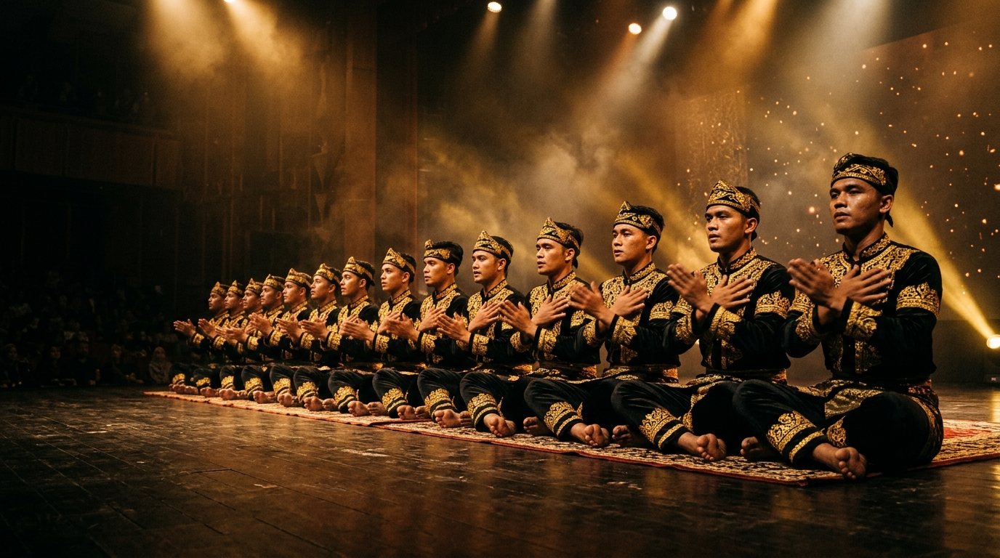
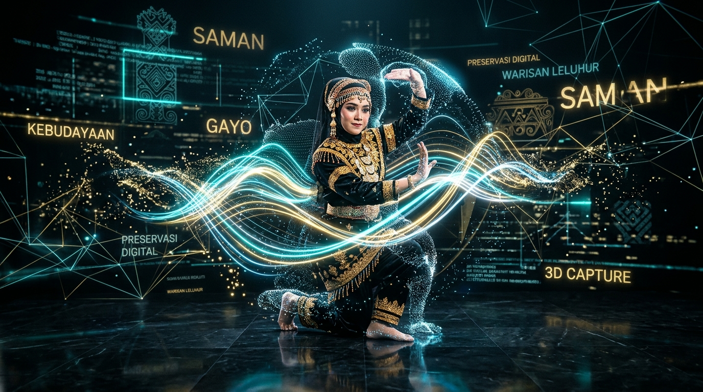

Jejak Budaya Tari Saman di Era Digital
Website ini dibuat untuk merangkum informasi sederhana tentang Tari Saman asal Gayo Lues, Aceh. Mulai dari asal-usulnya, keunikan gerak tepukan tanpa musik, hingga bagaimana tari ini tetap eksis dan viral di era internet sekarang.

Dokumentasi penari Saman berbusana adat Kerawang Gayo di atas panggung.
3 Fakta Penting Tari Saman
Ringkasan cepat mengapa tarian ini begitu istimewa dan mendunia.
Lahir di Tanah Gayo
Dikembangkan pada abad ke-14 oleh ulama besar Syekh Saman di Dataran Tinggi Gayo Lues, Aceh, awalnya sebagai sarana dakwah agama Islam.
0 Alat Musik
Tari Saman asli tidak menggunakan gendang ataupun alat musik lain. Musiknya murni berasal dari tepuk dada, tepuk tangan, petik jari, dan syair vokal para penari.
Warisan Dunia UNESCO
Pada 24 November 2011, UNESCO resmi menetapkan Tari Saman sebagai Warisan Budaya Takbenda Dunia yang perlu perlindungan mendesak.
Bagaimana Tari Saman Bertahan di Era Digital?
Banyak orang mengira budaya tradisional akan ditinggalkan oleh anak muda. Namun berkat media sosial (TikTok, Instagram, YouTube), video Tari Saman justru ditonton jutaan orang dari berbagai belahan dunia! Bahkan ada teknologi Motion Capture untuk merekam gerakan penari agar tidak punah.
